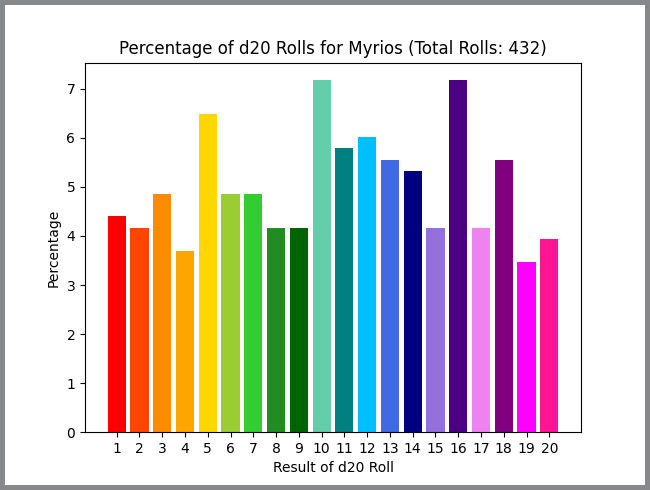
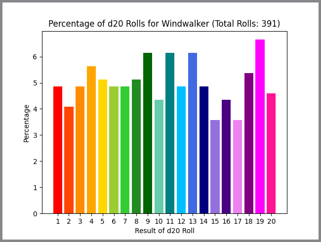

Roll20 Stats Parser
This project was made as a Python script that took an HTML roll20 chatlog as input.
In my free time, I am part of a Dungeons & Dragons campaign, a TTRPG where a lot of dice are rolled.
Being curious, I wanted to see generally the dice rolling statistics for each player, as well as the
overall stats of every d20 dice roll.
Roll20, the website we use to play, allows users to download the chatlog, which contains each player's dice rolls. The python program takes this file and locates every instance of a rolled d20 dice, finding which player rolled it, and keeping track of all these statistics. Once this is done, the results are graphed, both the raw results (as in the number of each dice rolled per person) and the percentage of those dice being a given result.
To the right is the graph for the total dice rolls graph, showing the percentage of each result. Below are two more examples of player-specific results.
 